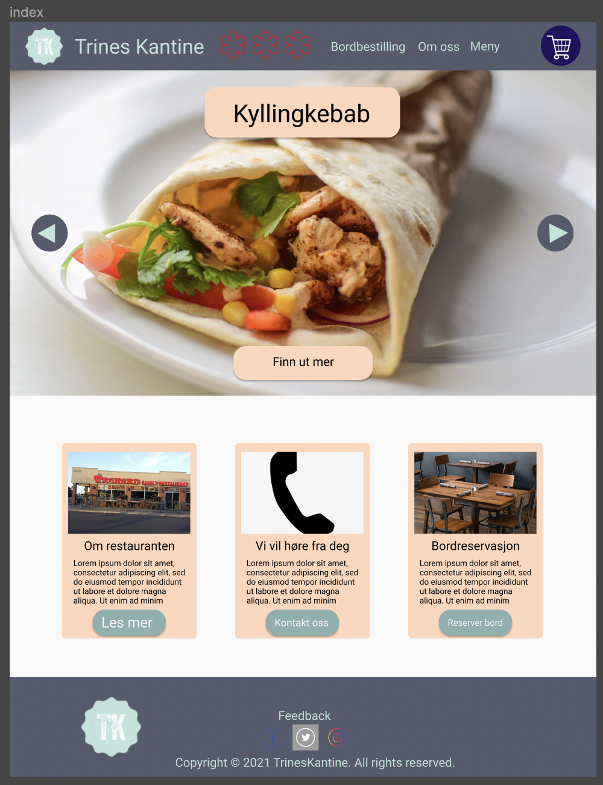
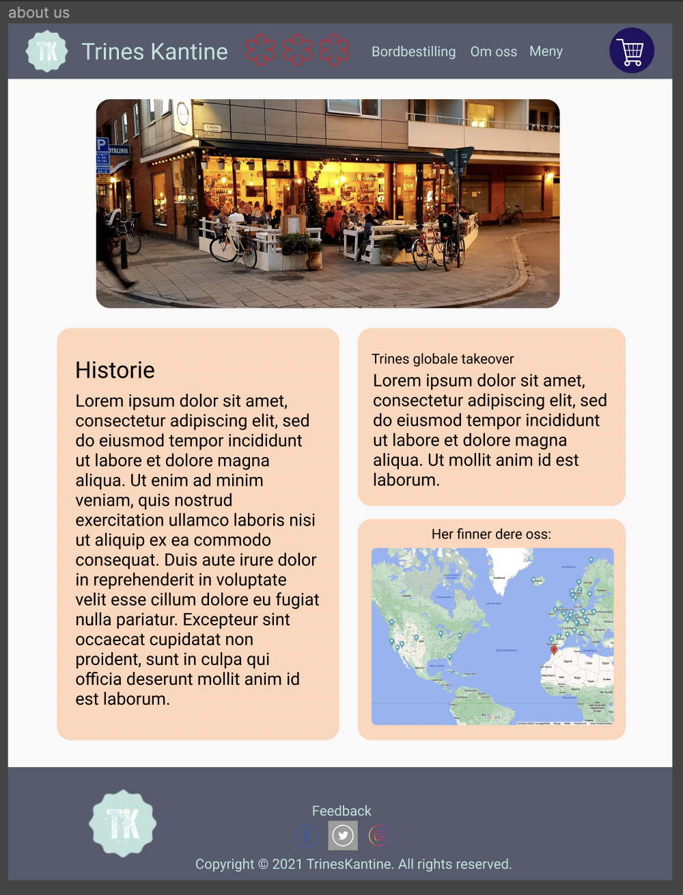
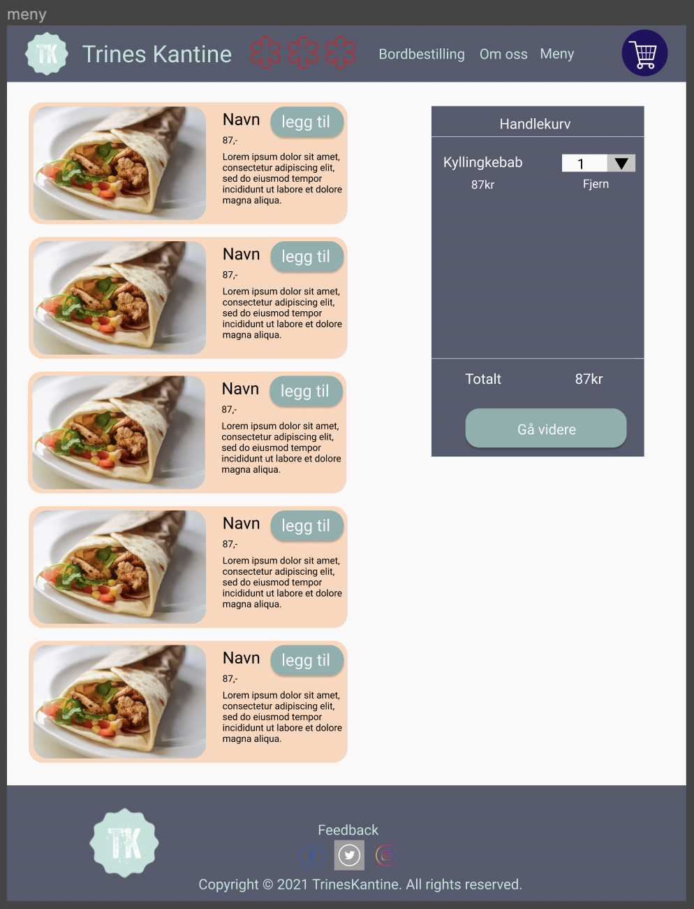
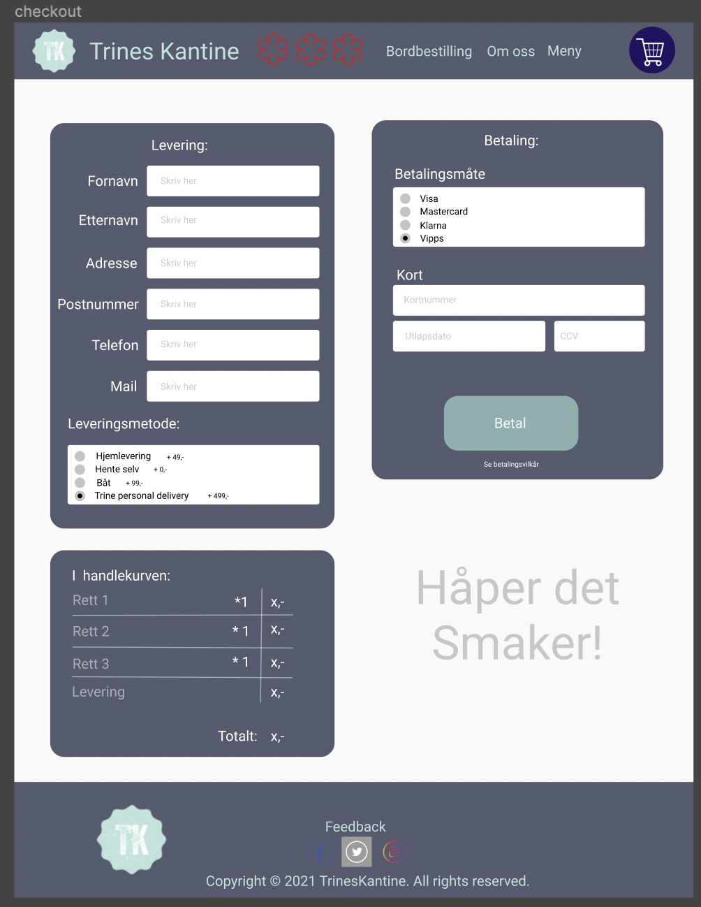
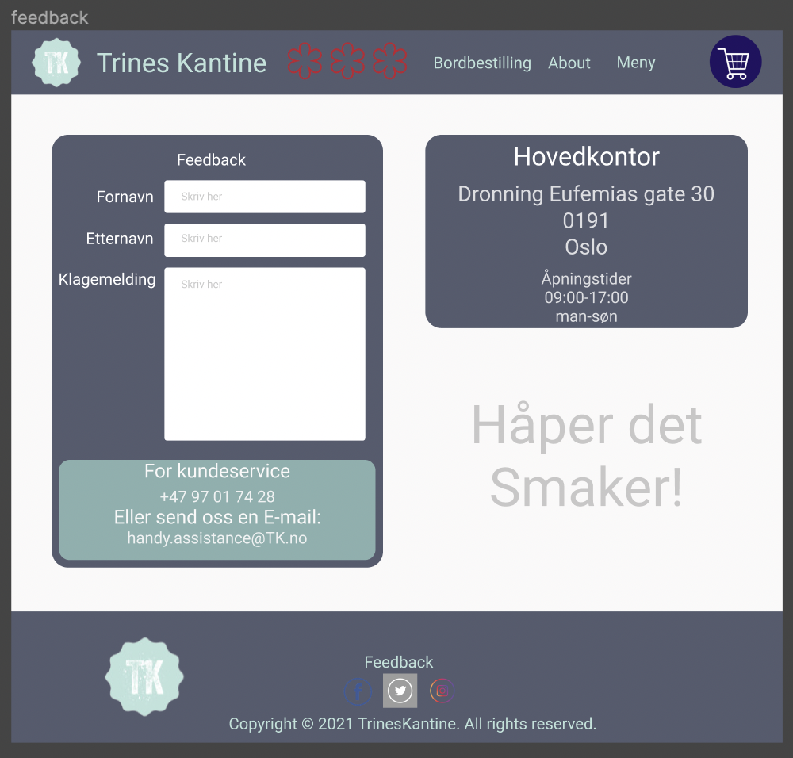
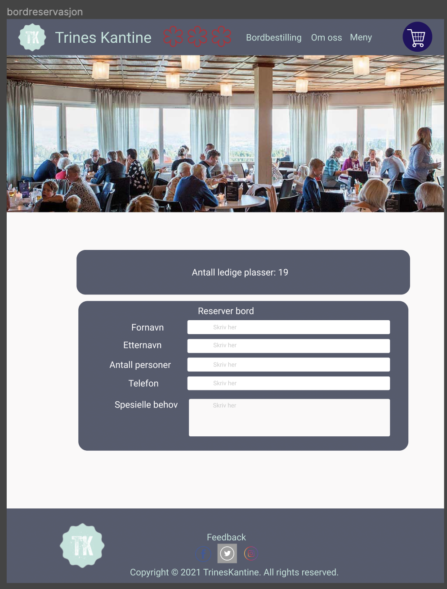

Tittel: P2 - Trines Kantine
Vebjørn, Trym, Erik, Erik, Frederik
07.10.2021
Klientens navn: Trine-Berit Kantine
Posisjon i organisasjonen: CEO av Trines Kantine
Hensikten med nettsiden er å markedsføre og selge maten til restauranten Trines Kantine. Foreløpig har selskapet ingen nettside, og dermed blir fjernbestiling, reservasjoner og markedsføring unødvendig vanskelig. Nettsiden skal øke bevisstheten rundt restauranten, og gjøre den lettere tilgjengelig for folk. Spesielt skal tilstedeværelsen på nett gjøre det lettere for folk i området rundt restauranten å kjøpe mat der. Trine ønsker også å utvide selskapet sitt, og på lang sikt åpne flere serveringssteder. Ved å komme seg på nett, vil Trine også kunne nå ut til en yngre målgruppe.
Hjemmesiden er siden brukeren først møter på. Dette er en side som skal være oversiktlig og gi brukeren et godt førsteinntrykk av bedriften. På denne siden skal det være større elementer som fører brukeren til de andre sidene sammen med en rask beskrivelse (trenger ikke være mer enn èn setning) om disse. På hjemmesiden skal det også være en rask grafisk oversikt over de mest populære produktene hos Trine.
Om oss siden inneholder utfyllende informasjon om hvem Trine-Berit er, hvor Trines Kantine holder til, og hvordan Trine har ekspandert til flere land . Siden skal ha en liten biografi om Trine-Berit, og hennes motivasjon for å drive Trines Kantine. Det skal være en forklaring av produksjonsmåten til flatbrødene, og liten historie om familiens flatbrødproduksjon, som strekker seg flere tiår bakover. Målet med siden er å gi leseren en dypere innsikt om Trine, historien bak restauranten og matlagingstradisjonen hun kommer fra. Siden skal være informativ, og være den største kilden til info for dem som ønsker å lære mer om Trines Kantine.
Menyen er en oversikt over hva som selges av Trines Kantine. Alle rettene som selges har hvert sitt bilde, en liten beskrivelse, og pris. I tillegg skal det være en knapp for å legge til i handlekurven. Handlekurven er innebygd i siden, og vises på høyresiden av siden mens du er inne på menyen. Den følger skjermen når man scroller nedover, så man alltid lett kan se hva man holder på å bestille. Handlekurven skal ha bilde og navnet på rettene du har lagt til, og en knapp som gjør det mulig å enkelt bestille flere eller færre av hver rett. Nederst i handlekurven skal det være en “Bestill”-knapp, som sender brukeren til betalingssiden. Målet er at menysiden er at skal gi folk lyst til å kjøpe mat, og la dem gjøre dette på en enkel måte. For å oppnå dette må det brukes fristende bilder og gode beskrivelser av rettene. Funksjonaliteten til handlekurven er også viktig for å gjøre kjøpsopplevelsen god.
Betalingssiden er siden du blir sendt til når du er klar for å bestille mat fra nettsiden. Når du trykker “Bestill” i menyen, vil hver rett og tilhørende antall bli lagret, og du blir sendt til betalingssiden. Her får du en liten oversikt over hva du holder på å bestille. Brukeren velger om den ønsker å få maten levert, eller å hente selv. På siden må du legge inn navn, adresse, postnummer, poststed, mobilnummer, og kortnummer. Siden vil sjekke om kortnummeret er et valid nummer, før den lar deg trykke betal. Hvis du fyller inn godtatt informasjon, vil siden la deg trykke “Betal”, som gir en bekreftelse på din bestilling. Målet med siden er at folk enkelt skal kunne betale for maten sin, og gi tydelig bekreftelse når bestillingen er utført.
Kontaktsiden vil inneholde kontaktinformasjonen til Trines Kantine. Her finner man e-post, mobilnummer, og åpningstidene til kundeservice. Målet med siden er å gjøre det enkelt for brukeren å komme i kontakt med selskapet. Siden vil ikke inneholde store mengder tekst, men heller gjøre den viktige informasjonen lett tilgjengelig.
Reservasjonssiden skal gjøre det enkelt å reservere bord ved en av lokalene til Trines Kantine. Siden skal ha to drop-down menyer; en for å velge lokasjon, og en for å velge antall gjester man ønsker å reservere for. Når begge er valgt, vil man få muligheten til å bekrefte reservasjonen sin. Det skal også være oversikt over hver lokasjon, og åpningstidene til hver sjappe. Siden vil også inneholde adresser, med tilhørende kart. Dette skal gjøre det enkelt for kunder å finne ut hvilken restaurant som er nærmest.
Følgende vil oppfylle minstekravene for JavaScript-bruk
Kortvalidator på betalingssiden. Dette vil være en JS-funksjon som sjekker om det innfylte kortnummeret er et gyldig kortnummer, ved hjelp av Luhns algoritme. Dette er en universell regel som gjør det enkelt å sjekke om et kortnummer har blitt skrevet inn feil.
En funksjon som lagrer rettene brukeren velger i en handlekurv. Handlekurven skal huskes så informasjonen skal kunne hentes ut når som helst. Man skal også kunne enten øke eller minke antallet av hver rett i handlekurven.
En funksjon som lagrer bestillingen du har lagt til i handlekurven, slik at siden husker den når du blir sendt til betalingssiden. Den gjør altså at betalingssiden vet hva som holder på å bestilles.
En funksjon som gjør at retten som vises på hjemmesiden endres ved jevne mellomrom. Hjemmesiden skal ha en seksjon som viser en rett med kort beskrivelse, og denne skal rullere med en del sekunders mellomrom
En funksjon som sjekker om det er ledige bord og reserverer et bord til brukeren dersom det er ledig.
Ettersom klienten er fiktiv, er det ingen filer vi ikke produserer eller finner selv. Altså ingen forventet “leveringstid” for noen filer.
| Filnavn | Beskrivelse | Ansvarlig | Frist |
|---|---|---|---|
| index.html index.css |
Hovedsiden | Erik D | 24.10 |
| about.hmtl about.css |
Om oss-siden med info om Trines Kantine | Vevbjørn | 24.10 |
| meny.html meny.css |
Viser meny og handlekurv | Erik L | 24.10 |
| betaling.html betaling.css |
Side for levering og betaling | Frederik | 24.10 |
| Kontakt.html kontakt.css |
Side med form for kontakt og relevant kontaktinformasjon | Vebjørn | 24.10 |
| checkout.js | script som lagrer informasjon fra handlekurv og bruker det på betalingssiden | Erik L | 07.11 |
| bestilling.js | Script som skal simulere kjøp av valgte produkter. Sjekker også om kortinfo er gyldig | Frederik | 07.11 |
| slideshow.js | scirpt som jevnlig endrer hvilken rett som kommer opp på siden | Erik D | 07.11 |
| handlekurv.js | Legger til varer i handlekurven | Erik L | 07.11 |
| style.css | Hovedfilen i css, som inneholder css som vil være aktuelt for alle sider | Alle | 07.11 |
| reservation.js | En funksjon som sjekker om det er ledige bord og reserverer et bord til brukeren dersom det er ledig | Trym | 07.11 |